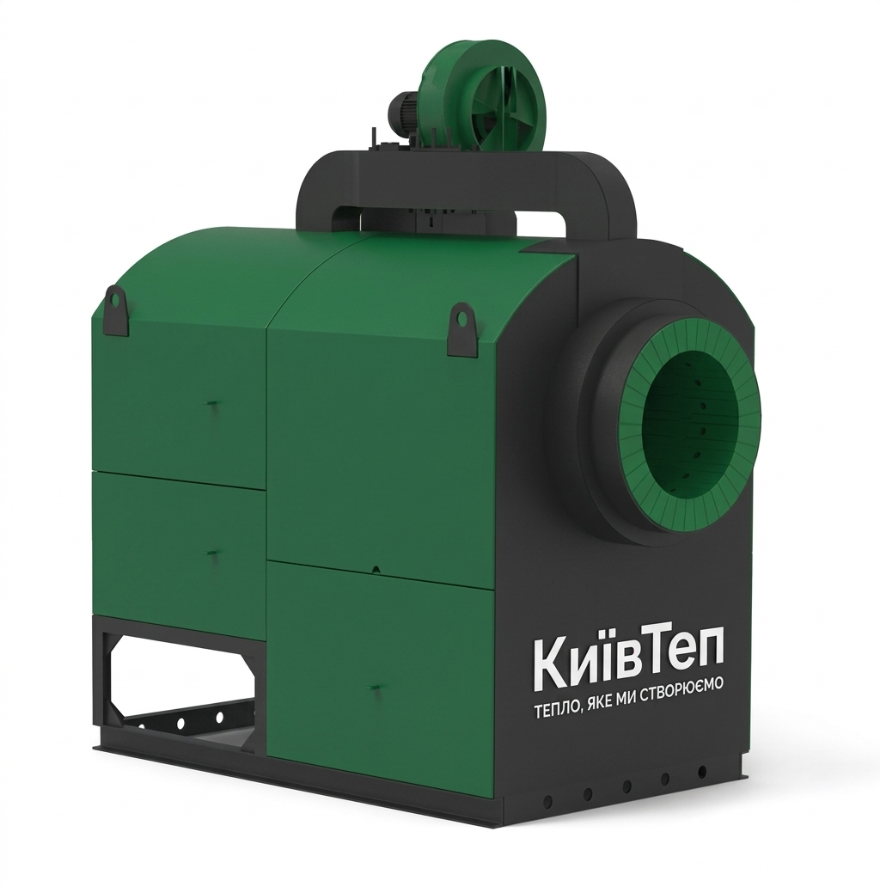
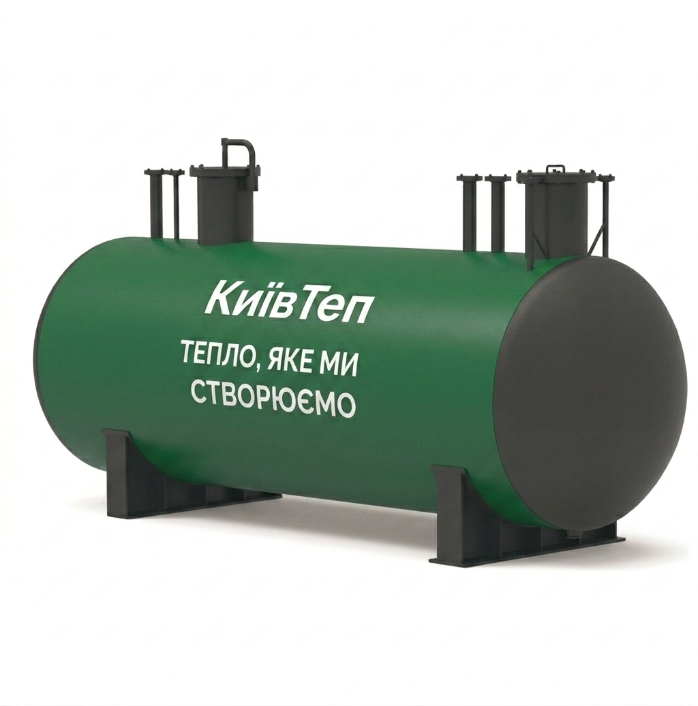
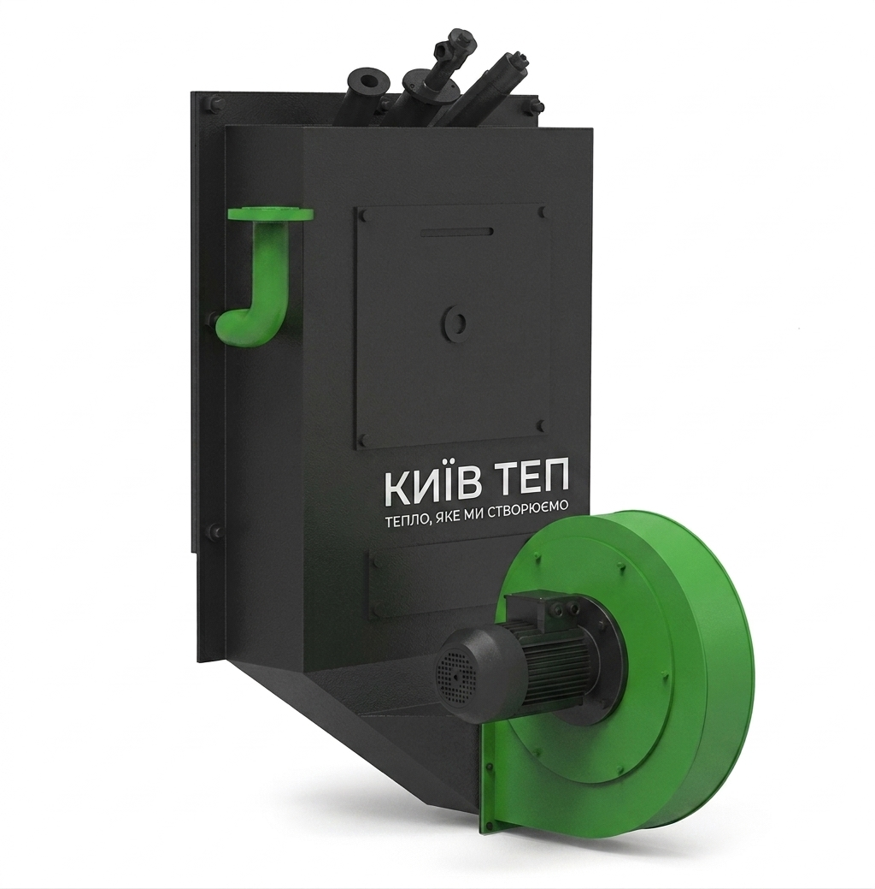
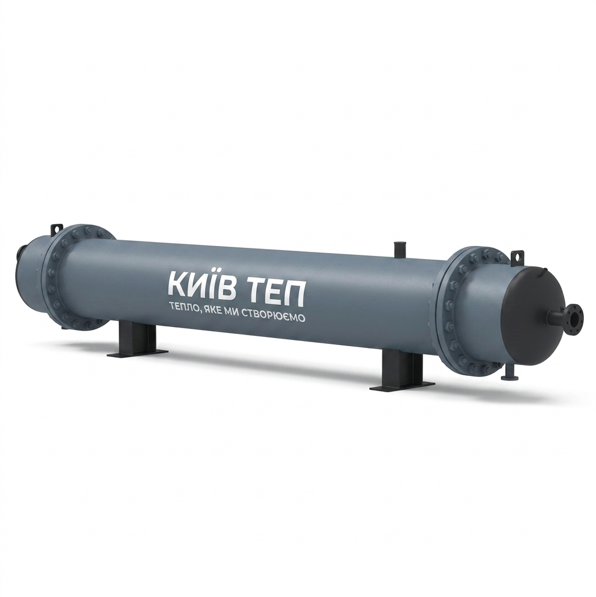
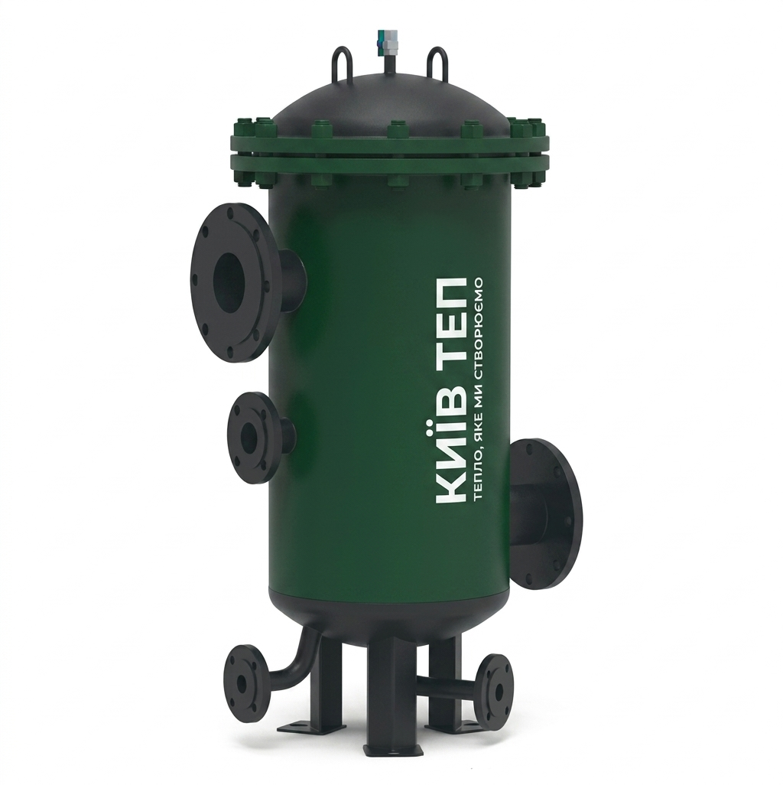
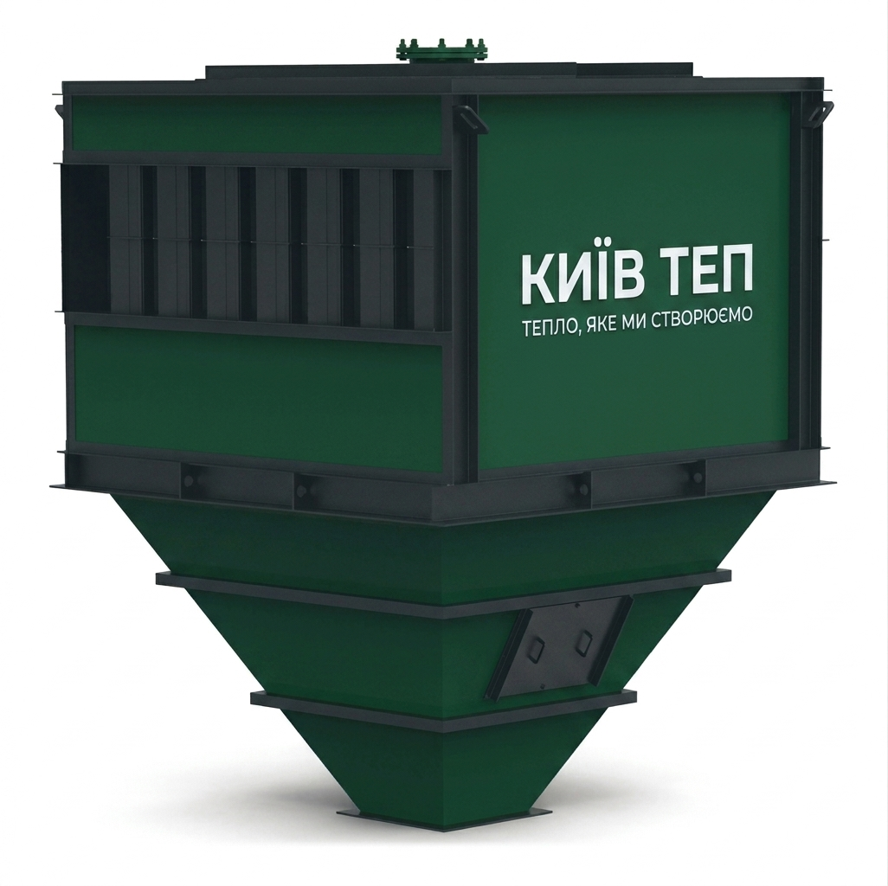
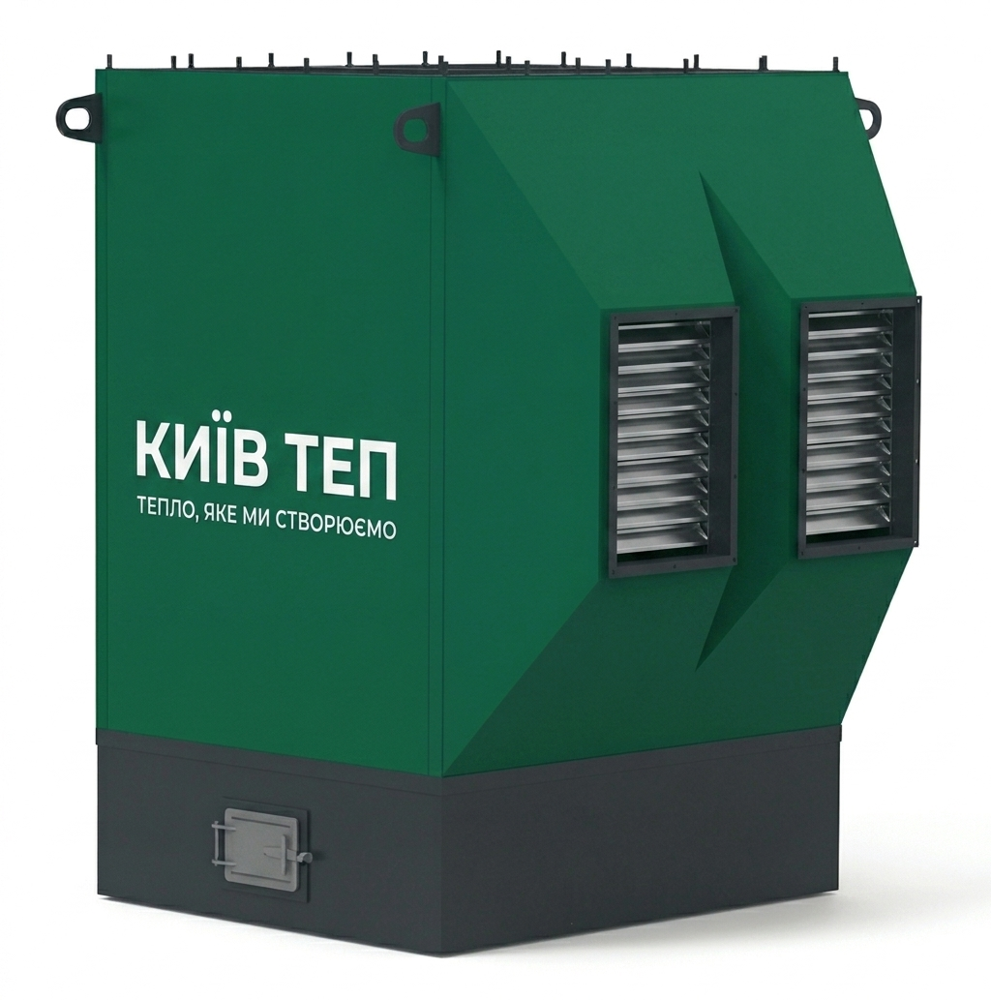
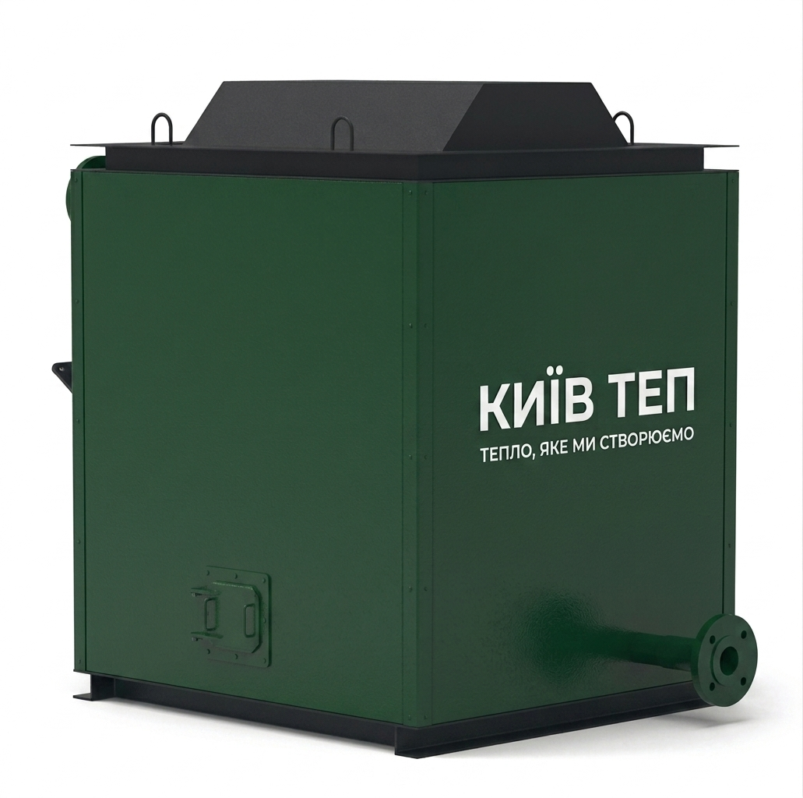
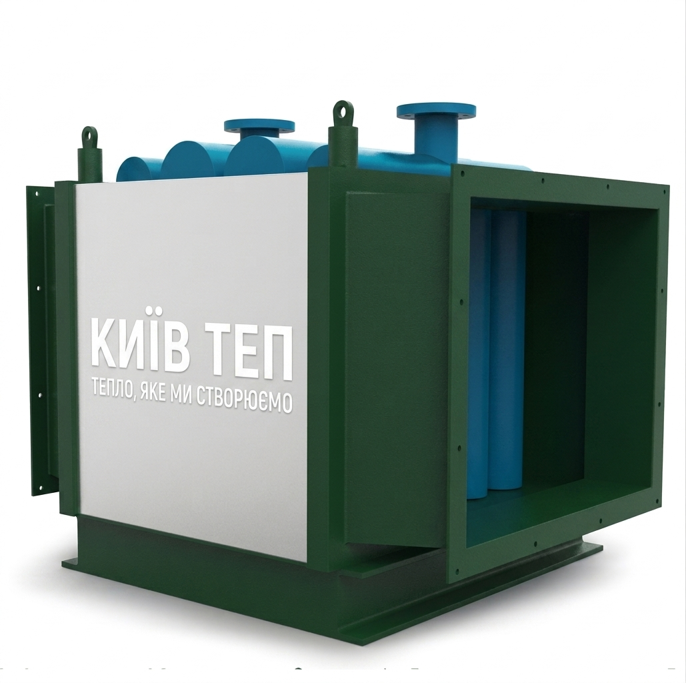

Наша продукція

Твердопаливні предтопки призначені для спалювання щепи та пелетів вологістю до 10%. Предтопок може використовуватися з відповідно підібраним теплообмінником або котлом. ТОВ «КиївТеп» виробляє твердопаливні предтопки номінальною тепловою потужністю 700 і 1400 кВт.

ТОВ «КиївТеп» здійснює за індивідуальним замовленням проектування та виробництво промислових ємностей об'ємом 2-100 м3 и тиском 1-40 атм.

Надійне рішення для спалювання газу та рідкого палива. Пальники від «КиївТеп» забезпечують стабільну роботу парових та водогрійних котлів. Ідеально підходять для заміни застарілого обладнання: вони підвищують ефективність споживання ресурсів та гарантують тривалий термін експлуатації котельного вузла.

Це високоефективні горизонтальні кожухотрубні теплообмінники, розроблені для доведення мазуту до оптимальної температури перед подачею на форсунки пальників. Процес теплообміну реалізований за класичною надійною схемою: пара циркулює у міжтрубному просторі, передаючи енергію мазуту, що рухається всередині трубок.

Забезпечують надійний двоступеневий захист системи (груба та тонка очистка). Фільтри ефективно видаляють механічні домішки та тверді нафтові залишки з високов’язких марок палива. Завдяки фільтруючим елементам із якісної нержавіючої сталі, обладнання вирізняється довговічністю та стійкістю до корозії.

Спеціалізоване обладнання для екологічного та технічного очищення димових газів від золи та пилу при спалюванні твердого палива. Оскільки дрібні фракції золи (близько 10%) виносяться потоком повітря, наші циклони забезпечують їх ефективне вловлювання, мінімізуючи викиди в атмосферу.

Трубчасті конструкції, що використовують енергію відхідних газів для нагріву первинного повітря до $150–250°C$. Такий підхід суттєво оптимізує процес горіння в топці парового котла та підвищує загальну енергоефективність системи.

Сталеві економайзери серії Е, ДЕ, ДКВр, КЕ — це незамінні «хвостові» поверхні нагріву. Вони дозволяють значно підняти ККД котлоагрегату, використовуючи тепло димових газів для попереднього підігріву живильної води, що економить паливо.

Високотехнологічні теплообмінники для повернення «втраченого» тепла у виробничий цикл. Утилізатори відбирають теплоту від димових газів парових котлів та інших об'єктів, спрямовуючи її на внутрішні потреби котельні або на забезпечення гарячою водою сторонніх споживачів.

Потужні тягодуттьові машини, що забезпечують стабільне розрідження в топці та ефективне відведення продуктів згоряння. Розраховані на роботу з неагресивними газами із вмістом пилу до 1 г/м³, що гарантує стабільну тягу та безпечну експлуатацію котла.

Дуттьові вентилятори одностороннього всмоктування — це надійне рішення для безперебійної подачі повітря в топки парових та водогрійних котлів. Обладнання спроєктоване для тривалої експлуатації в інтенсивному режимі. Конструкція дозволяє встановлювати вентилятори як всередині приміщень, так і на відкритому повітрі (під захисним навісом).

Високоефективні двоступеневі деаератори атмосферного тиску. Їхнє головне завдання — термічне видалення корозійно-агресивних газів (кисню та вільної вуглекислоти) із живильної води парових котлів та систем теплопостачання. Використання деаераторів ДА суттєво подовжує термін служби трубопроводів та котельного обладнання.

Ми виготовляємо повний спектр трубних компонентів для парових котлів будь-якої складності: Екрани та ширми (гнуті труби та змійовики); Пароперегрівачі та економайзери високої надійності; Сполучні трубопроводи в межах котлоагрегату (опускні, перепускні, відвідні та підвісні системи). Всі елементи проходять суворий контроль якості та відповідають технічним нормам безпеки.

Широкий модельний ряд повітронагрівачів з різними схемами руху теплоносія для максимальної ефективності вашої котельні: Типи потоків: з рухом газів усередині труб або із зовнішнім омиванням трубної системи. Конфігурації: одно- та багатопоточні, з прямоточною, протиточною або каскадною схемою. Схеми циркуляції: S-перехресні, Z-перехресні, одно- та багатоходові конструкції. Ступені: одно- та двоступінчасті агрегати з можливістю чіткого розподілу на тракти первинного та вторинного повітря.